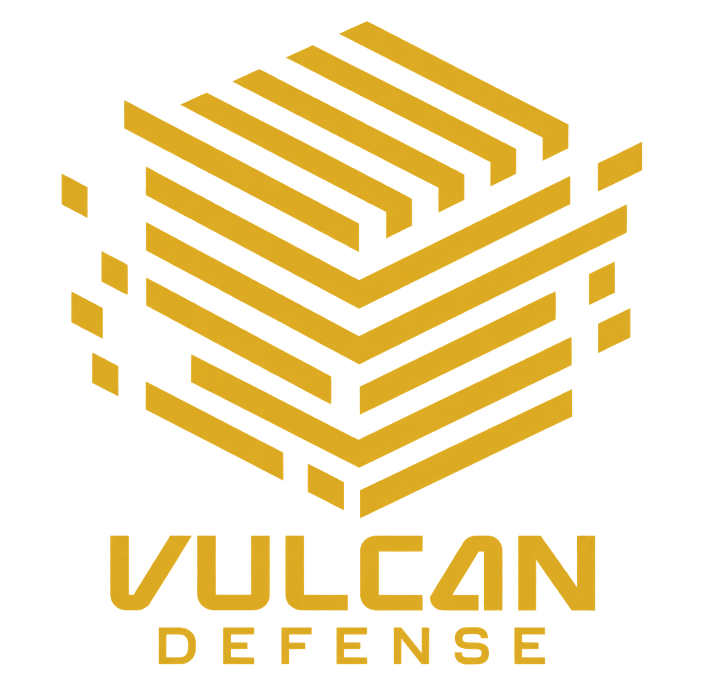

Engenharia reversa
Avaliação de extração de modelos, vazamento de prompts, exposição de pesos e abuso de APIs.

PORTFÓLIO COMERCIAL & BASE TÉCNICA DE SERVIÇOS 2026
Proteção contínua e capacidade operacional integrada para ambientes corporativos, regulados, industriais e estratégicos.
Arquitetura, hardening, IAM, AppSec, DevSecOps e gestão proativa de vulnerabilidades.
SIEM, EDR/XDR, correlação de eventos, Threat Intelligence, Detection Engineering e Threat Hunting.
Incident Response, contenção imediata, investigação, forense digital, playbooks e recuperação.
Dashboards executivos, KPIs, relatórios técnicos, trilhas de auditoria e evidências para compliance.
Reteste, tuning de regras, lições aprendidas (lessons learned), roadmap de maturidade e evolução contínua.
Formação de Security Champions, treinamentos práticos, laboratórios e transferência de conhecimento.
Segmentação por criticidade, IAM/PAM, hardening, SOC/SIEM, EDR/XDR, hunting, forense e proteção de supply chain[cite: 1, 2].
Classificação de dados, Least Privilege, DLP, criptografia, auditoria rigorosa de código/Git e gestão de acessos a IP[cite: 1, 2].
Segurança TI/OT, SCADA/PLC, segmentação rígida, telemetria industrial, acesso remoto seguro e conformidade NERC CIP[cite: 1, 2].
Proteção de WMS/TMS/ERP, segurança em APIs/EDI, proteção de endpoints em centros de distribuição e continuidade operacional[cite: 1, 2].
Defesa em profundidade, planos de continuidade (PCN/DRP), isolamento Air-Gap e simulações de crises cibernéticas[cite: 1, 2].
Plataforma proprietária integrando Vulcan Agent (FIM, logs, inventário), Vulcan-SIEM, Vulcan Exposure e Vulcan Response[cite: 1, 2].
Proteção prática para modelos, aplicações e agentes de Superinteligência antes de chegarem à produção. Avaliamos controles técnicos, caminhos de abuso e os pontos que exigem aprovação humana.
Avaliação de extração de modelos, vazamento de prompts, exposição de pesos e abuso de APIs.
Identidade, segredos, segmentação, limites, telemetria e configurações seguras durante todo o ciclo de vida.
Privilégio mínimo, ferramentas autorizadas, validação de ações e rastreabilidade por execução.
Threat modeling, revisão de arquitetura e testes de prompt injection, data poisoning e tool abuse.
Planejamento e implantação de ML-KEM para proteger a troca de chaves em comunicações que precisam resistir ao risco quântico. A abordagem começa pelo inventário criptográfico e introduz controles híbridos sem interromper serviços críticos.
| Perfil | Chave pública | Ciphertext |
|---|---|---|
| ML-KEM-512 | 800 B | 768 B |
| ML-KEM-768 | 1.184 B | 1.088 B |
| ML-KEM-1024 | 1.568 B | 1.568 B |
A seleção do perfil é definida pela avaliação de risco, requisitos de desempenho e compatibilidade. O FIPS 203 padroniza ML-KEM-512, ML-KEM-768 e ML-KEM-1024.
Este teste usa ML-KEM-768 para gerar localmente um par de chaves, encapsular um segredo compartilhado e recuperá-lo pela chave privada. A página não transmite, armazena ou exibe material criptográfico.
Pronto para executar. O resultado será exibido neste dispositivo.
Esta demonstração não altera o TLS do GitHub Pages nem substitui uma implantação de PQC em servidores, APIs ou gateways.
Escopo, prazo e entregáveis delimitados (Pentests, Assessments, Auditorias de Superinteligência)[cite: 1, 2].
Operação contínua 24x7 com garantias de SLA (SOC, Exposure, Monitoramento de Superinteligência)[cite: 1, 2].
Capacidade técnica dedicada/compartilhada ou reserva para Incident Response[cite: 1, 2].
Cyber Defense Operations
🌐 Web: vulcandefense.com.br
🎓 Academy: academy.vulcandefense.com.br
📞 Comercial: +55 21 96658-4646 / +55 21 98682-3676